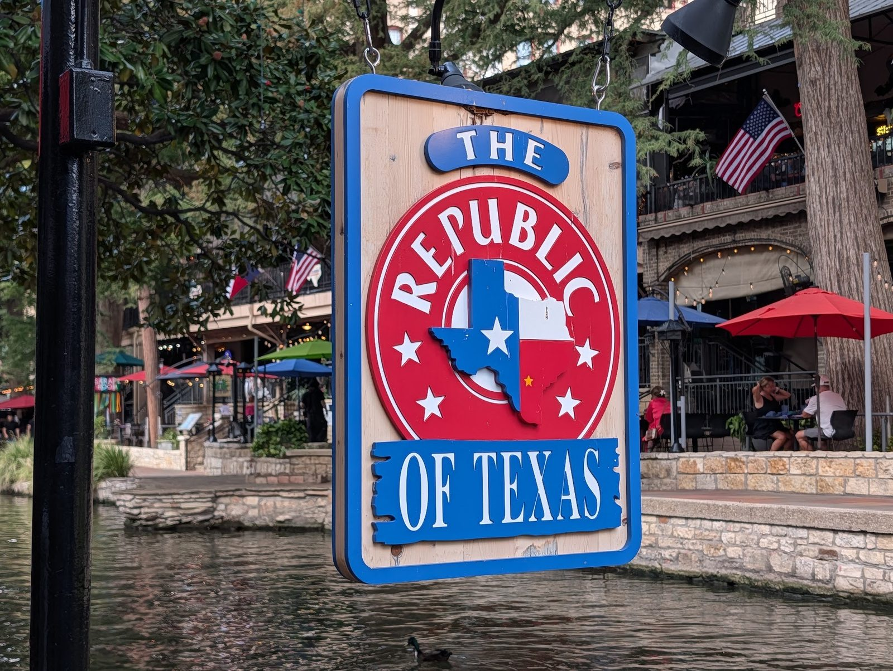

Ribs & brisket
Tender, smoky ribs. Brisket on tacos, sandwiches and platters with beans and sides.


American restaurant · San Antonio River Walk
Ribs, brisket, chicken fried steak and Tex-Mex plates beside the San Antonio River.
House favorites
What to order first.
Tender, smoky ribs. Brisket on tacos, sandwiches and platters with beans and sides.
Hand-breaded and cooked to order, under a white gravy that's not too thick and not watery.

Brisket tacos with rice and beans, chips with salsa, plus Supreme Nachos and the Triple Dipper.


4.14612 Google reviews
I am a local, but still have alot of places I need to visit in my beautiful city. So Glad I stopped by this gem before my movie today. I had the Chicken Fried Chicken with fries and started with Chips and Guac. The Chicken was prepared beautifully, the perfect size, not greasy and oh so tasty.
While traveling through town, we decided to stop by Republic of Texas. To be honest, from the outside, I wasn’t expecting anything extraordinary, but once the food arrived, I quickly changed my mind. The ribs were absolutely amazing, tender, flavorful, and cooked to perfection. We also tried the steak, chicken-fried steak, and several sides, and everything was delicious.
We had an amazing experience at The Republic of Texas Restaurant on the River Walk! From the moment we sat down, our bartender Monica made the entire night memorable. She was incredibly welcoming, attentive, knowledgeable about the menu, and had such a great personality that made us feel like regulars even though it was our first visit.

Our story
Part of the River Walk since the summer of 1975, and still family owned and run. Our pledge is short: work hard and be nice.
Friendly staff, full plates, and a patio with fans under the umbrellas, ducks and birds for company.
Visit
526 River Walk, San Antonio, TX 78205
Weekend brunch runs 9 to 11 AM. Sit outside by the river.